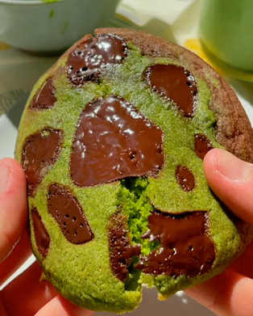

Matcha Chocolate Chip Cookies

A soft and gooey matcha chocolate chip cookie
Ooey gooey in the center and slightly crispy on the outside. Matcha
and chocolate were meant to be together.
Ingredients
Matcha cookie dough
- 100g butter, room temperature
- 100g sugar
- 150g AP flour
- 1 tbsp matcha powder
- 1 tsp baking powder
- 1 tsp salt
- 1 egg
- 1 tsp vanilla extract
Chocolate cookie dough
- 100g butter, room temperature
- 100g sugar
- 150g AP flour
- 1 tbsp cocoa powder
- 1 tsp baking powder
- 1 tsp salt
- 1 egg
- 1 tsp vanilla extract
- Semi sweet 70% dark chocolate or nuts of your choice
Steps
- Preheat the oven at 180C / 355F
- In a medium sized bowl, add room temperature butter and sugar.
Whisk until smooth and slighitly fluffy.
- Add the vanilla extract and crack 1 egg into the mixture. Whisk
until combined.
- Sift in flour, baking powder, matcha and salt.
- Mix until there are no dry spots.
- Repeat the process for the chocolate cookie dough.
- The dough should feel slightly wetter than normal cookie dough.
This allows the cookies to be slightly crispy on the outside but
ooey-gooey on the inside.
- Using a icecream scooper, scoop ½ tbsp of the matcha dough in
first on one side.
- Fill the rest with chocolate cookie dough. At this point, if you
want a more marbled effect, use a toothpick to swirl along the
where the two doughs meet.
- Dollop the cookie mixture into a parchment lined baking tray.
Make sure to have ample space inbetween the cookies!! My first
batch was way too close and it ended up becoming attached to each
other. Rest the batter in the fridge for 30 minutes.
- Bake at 180C / 355F for 12-15 minutes, depending on how you like
your cookies-- super gooey or slightly crispy!